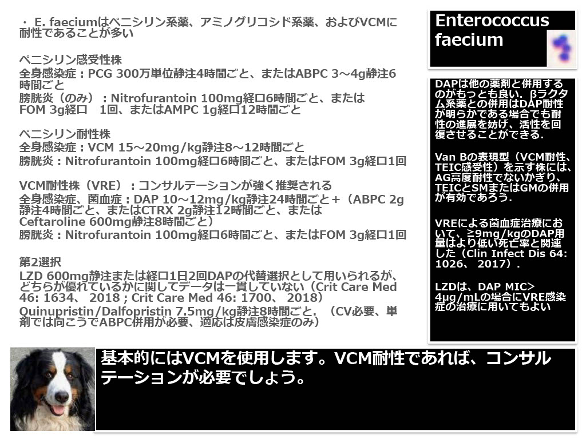

分類・特徴
- 常在
- 消化管
- 耐性
- セファロスポリン全て無効、多くがアンピシリン耐性
- VRE
- vanA / vanB によるバンコマイシン耐性が増加
主な感染症
- 院内菌血症（特に長期入院・抗菌薬曝露患者）
- 感染性心内膜炎（IE）
- UTI（カテーテル関連）
第一選択薬
VCM 感受性株
バンコマイシン
VRE
リネゾリド or ダプトマイシン
DAP は高用量（10-12 mg/kg/day）
臨床上の注意点
- セファロスポリン全て無効（intrinsic resistance）
- 腸管定着がリザーバ — VRE 接触隔離・手指衛生徹底
グラム染色 像（E. faecium）



関連菌：Enterococcus raffinosus
同じく腸球菌属の稀少種。VRE と同様に院内・カテーテル関連菌血症で問題になりうる。下図は院内記録より。